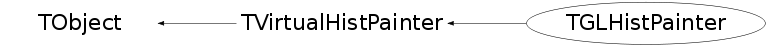

class TGLHistPainter: public TVirtualHistPainter
The histogram painter class using OpenGL
General information: plot types and supported options
The following types of plots are provided:- Lego - (TGLLegoPainter)
The supported options are:- "GLLEGO" : Draw a lego plot.
- "GLLEGO2" : Bins with color levels.
- "GLLEGO3" : Cylindrical bars.
- Surfaces (TF2 and TH2 with "GLSURF" options) - (TGLSurfacePainter)
The supported options are:- "GLSURF" : Draw a surface.
- "GLSURF1" : Surface with color levels
- "GLSURF2" : The same as "GLSURF1" but without polygon outlines.
- "GLSURF3" : Color level projection on top of plot (works only in cartesian coordinate system).
- "GLSURF4" : Same as "GLSURF" but without polygon outlines.
- Additional options to SURF and LEGO - Coordinate systems:
The supported options are:- " " : Default, cartesian coordinates system.
- "POL" : Polar coordinates system.
- "CYL" : Cylindrical coordinates system.
- "SPH" : Spherical coordinates system.
- TH3 as boxes (spheres) - (TGLBoxPainter)
The supported options are:- "GLBOX" : TH3 as a set of boxes, size of box is proportional to bin content.
- "GLBOX1": the same as "glbox", but spheres are drawn instead of boxes.
- TH3 as iso-surface(s) - (TGLIsoPainter)
The supported option is:- "GLISO" : TH3 is drawn using iso-surfaces.
- TH3 as color boxes - (TGLVoxelPainter)
The supported option is:- "GLCOL" : TH3 is drawn using semi-transparent colored boxes.
See $ROOTSYS/tutorials/gl/glvox1.C.
- "GLCOL" : TH3 is drawn using semi-transparent colored boxes.
- TF3 (implicit function) - (TGLTF3Painter)
The supported option is:- "GLTF3" : Draw a TF3.
- Parametric surfaces - (TGLParametricPlot)
$ROOTSYS/tutorials/gl/glparametric.C shows how to create parametric equations and visualize the surface.
Interaction with the plots
- General information.
All the interactions are implemented via standard methods DistancetoPrimitive and ExecuteEvent. That's why all the interactions with the OpenGL plots are possible i only when the mouse cursor is in the plot's area (the plot's area is the part of a the pad occupied by gl-produced picture). If the mouse cursor is not above gl-picture, the standard pad interaction is performed. - Selectable parts.
Different parts of the plot can be selected:- xoz, yoz, xoy back planes:
When such a plane selected, it's highlighted in green if the dynamic slicing by this plane is supported, and it's highlighted in red, if the dynamic slicing is not supported. - The plot itself:
On surfaces, the selected surface is outlined in red. (TF3 and ISO are not outlined). On lego plots, the selected bin is highlihted. The bin number and content are displayed in pad's status bar. In box plots, the box or sphere is highlighted and the bin info is displayed in pad's status bar.
- xoz, yoz, xoy back planes:
- Rotation and zooming.
- Rotation:
When the plot is selected, it can be rotated by pressing and holding the left mouse button and move the cursor. - Zoom/Unzoom:
Mouse wheel or 'j', 'J', 'k', 'K' keys.
- Rotation:
- Panning.
The selected plot can be moved in a pad's area by pressing and holding the left mouse button and the shift key.
Box cut
Surface, iso, box, TF3 and parametric painters support box cut by pressing the 'c' or 'C' key when the mouse cursor is in a plot's area. That will display a transparent box, cutting away part of the surface (or boxes) in order to show internal part of plot. This box can be moved inside the plot's area (the full size of the box is equal to the plot's surrounding box) by selecting one of the box cut axes and pressing the left mouse button to move it.Plot specific interactions (dynamic slicing etc.)
Currently, all gl-plots support some form of slicing. When back plane is selected (and if it's highlighted in green) you can press and hold left mouse button and shift key and move this back plane inside plot's area, creating the slice. During this "slicing" plot becomes semi-transparent. To remove all slices (and projected curves for surfaces) - double click with left mouse button in a plot's area.- Surface with option "GLSURF"
The surface profile is displayed on the slicing plane. The profile projection is drawn on the back plane by pressing 'p' or 'P' key. - TF3
The contour plot is drawn on the slicing plane. For TF3 the color scheme can be changed by pressing 's' or 'S'. - Box
The contour plot corresponding to slice plane position is drawn in real time. - Iso
Slicing is similar to "GLBOX" option. - Parametric plot
No slicing. Additional keys: 's' or 'S' to change color scheme - about 20 color schemes supported ('s' for "scheme"); 'l' or 'L' to increase number of polygons ('l' for "level" of details), 'w' or 'W' to show outlines ('w' for "wireframe").
Function Members (Methods)
public:
| TGLHistPainter(TH1* hist) | |
| TGLHistPainter(TGLParametricEquation* equation) | |
| TGLHistPainter(TGL5DDataSet* data) | |
| TGLHistPainter(TGLTH3Composition* comp) | |
| ~TGLHistPainter() | |
| void | TObject::AbstractMethod(const char* method) const |
| virtual void | TObject::AppendPad(Option_t* option = "") |
| virtual void | TObject::Browse(TBrowser* b) |
| static TClass* | Class() |
| virtual const char* | TObject::ClassName() const |
| virtual void | TObject::Clear(Option_t* = "") |
| virtual TObject* | TObject::Clone(const char* newname = "") const |
| virtual Int_t | TObject::Compare(const TObject* obj) const |
| virtual void | TObject::Copy(TObject& object) const |
| virtual void | TObject::Delete(Option_t* option = "")MENU |
| virtual Int_t | DistancetoPrimitive(Int_t px, Int_t py) |
| virtual void | TObject::Draw(Option_t* option = "") |
| virtual void | TObject::DrawClass() constMENU |
| virtual TObject* | TObject::DrawClone(Option_t* option = "") constMENU |
| virtual void | DrawPanel() |
| virtual void | TObject::Dump() constMENU |
| virtual void | TObject::Error(const char* method, const char* msgfmt) const |
| virtual void | TObject::Execute(const char* method, const char* params, Int_t* error = 0) |
| virtual void | TObject::Execute(TMethod* method, TObjArray* params, Int_t* error = 0) |
| virtual void | ExecuteEvent(Int_t event, Int_t px, Int_t py) |
| virtual void | TObject::Fatal(const char* method, const char* msgfmt) const |
| virtual TObject* | TObject::FindObject(const char* name) const |
| virtual TObject* | TObject::FindObject(const TObject* obj) const |
| virtual TList* | GetContourList(Double_t contour) const |
| virtual Option_t* | TObject::GetDrawOption() const |
| static Long_t | TObject::GetDtorOnly() |
| virtual const char* | TObject::GetIconName() const |
| virtual const char* | TObject::GetName() const |
| virtual char* | GetObjectInfo(Int_t px, Int_t py) const |
| static Bool_t | TObject::GetObjectStat() |
| virtual Option_t* | TObject::GetOption() const |
| TGLPlotPainter* | GetRealPainter() |
| virtual TList* | GetStack() const |
| virtual const char* | TObject::GetTitle() const |
| virtual UInt_t | TObject::GetUniqueID() const |
| virtual Bool_t | TObject::HandleTimer(TTimer* timer) |
| virtual ULong_t | TObject::Hash() const |
| static TVirtualHistPainter* | TVirtualHistPainter::HistPainter(TH1* obj) |
| virtual void | TObject::Info(const char* method, const char* msgfmt) const |
| virtual Bool_t | TObject::InheritsFrom(const char* classname) const |
| virtual Bool_t | TObject::InheritsFrom(const TClass* cl) const |
| virtual void | TObject::Inspect() constMENU |
| void | TObject::InvertBit(UInt_t f) |
| virtual TClass* | IsA() const |
| virtual Bool_t | TObject::IsEqual(const TObject* obj) const |
| virtual Bool_t | TObject::IsFolder() const |
| virtual Bool_t | IsInside(Int_t x, Int_t y) |
| virtual Bool_t | IsInside(Double_t x, Double_t y) |
| Bool_t | TObject::IsOnHeap() const |
| virtual Bool_t | TObject::IsSortable() const |
| Bool_t | TObject::IsZombie() const |
| virtual void | TObject::ls(Option_t* option = "") const |
| virtual Int_t | MakeCuts(char* cutsOpt) |
| void | TObject::MayNotUse(const char* method) const |
| virtual Bool_t | TObject::Notify() |
| void | TObject::Obsolete(const char* method, const char* asOfVers, const char* removedFromVers) const |
| static void | TObject::operator delete(void* ptr) |
| static void | TObject::operator delete(void* ptr, void* vp) |
| static void | TObject::operator delete[](void* ptr) |
| static void | TObject::operator delete[](void* ptr, void* vp) |
| void* | TObject::operator new(size_t sz) |
| void* | TObject::operator new(size_t sz, void* vp) |
| void* | TObject::operator new[](size_t sz) |
| void* | TObject::operator new[](size_t sz, void* vp) |
| virtual void | Paint(Option_t* option) |
| virtual void | PaintStat(Int_t dostat, TF1* fit) |
| virtual void | TObject::Pop() |
| virtual void | TObject::Print(Option_t* option = "") const |
| virtual void | ProcessMessage(const char* message, const TObject* obj) |
| virtual Int_t | TObject::Read(const char* name) |
| virtual void | TObject::RecursiveRemove(TObject* obj) |
| void | TObject::ResetBit(UInt_t f) |
| virtual void | TObject::SaveAs(const char* filename = "", Option_t* option = "") constMENU |
| virtual void | TObject::SavePrimitive(ostream& out, Option_t* option = "") |
| void | TObject::SetBit(UInt_t f) |
| void | TObject::SetBit(UInt_t f, Bool_t set) |
| virtual void | TObject::SetDrawOption(Option_t* option = "")MENU |
| static void | TObject::SetDtorOnly(void* obj) |
| virtual void | SetHistogram(TH1* hist) |
| static void | TObject::SetObjectStat(Bool_t stat) |
| static void | TVirtualHistPainter::SetPainter(const char* painter) |
| virtual void | SetShowProjection(const char* option, Int_t nbins) |
| virtual void | SetStack(TList* stack) |
| virtual void | TObject::SetUniqueID(UInt_t uid) |
| virtual void | ShowMembers(TMemberInspector& insp) |
| virtual void | Streamer(TBuffer& b) |
| void | StreamerNVirtual(TBuffer& b) |
| virtual void | TObject::SysError(const char* method, const char* msgfmt) const |
| Bool_t | TObject::TestBit(UInt_t f) const |
| Int_t | TObject::TestBits(UInt_t f) const |
| virtual void | TObject::UseCurrentStyle() |
| virtual void | TObject::Warning(const char* method, const char* msgfmt) const |
| virtual Int_t | TObject::Write(const char* name = 0, Int_t option = 0, Int_t bufsize = 0) |
| virtual Int_t | TObject::Write(const char* name = 0, Int_t option = 0, Int_t bufsize = 0) const |
protected:
| virtual void | TObject::DoError(int level, const char* location, const char* fmt, va_list va) const |
| void | TObject::MakeZombie() |
private:
| TGLHistPainter(const TGLHistPainter&) | |
| void | CreatePainter(const TGLHistPainter::PlotOption_t& parsed, const TString& option) |
| TGLHistPainter& | operator=(const TGLHistPainter&) |
| void | PadToViewport(Bool_t selectionPass = kFALSE) |
| TGLHistPainter::PlotOption_t | ParsePaintOption(const TString& option) const |
Data Members
public:
| enum TObject::EStatusBits { | kCanDelete | |
| kMustCleanup | ||
| kObjInCanvas | ||
| kIsReferenced | ||
| kHasUUID | ||
| kCannotPick | ||
| kNoContextMenu | ||
| kInvalidObject | ||
| }; | ||
| enum TObject::[unnamed] { | kIsOnHeap | |
| kNotDeleted | ||
| kZombie | ||
| kBitMask | ||
| kSingleKey | ||
| kOverwrite | ||
| kWriteDelete | ||
| }; |
private:
| TGLPlotCamera | fCamera | |
| TGLPlotCoordinates | fCoord | |
| auto_ptr<TVirtualHistPainter> | fDefaultPainter | |
| TGLParametricEquation* | fEq | |
| TF3* | fF3 | |
| auto_ptr<TGLPlotPainter> | fGLPainter | |
| TH1* | fHist | |
| EGLPlotType | fPlotType | |
| TList* | fStack |
Class Charts
{kind=link}
{kind=link}
{kind=link}
{kind=link}

Function documentation
TGLHistPainter(TH1* hist)
ROOT does not use exceptions, so, if default painter's creation failed, fDefaultPainter is 0. In each function, which use it, I have to check the pointer first.
Int_t DistancetoPrimitive(Int_t px, Int_t py)
Selects plot or axis. 9999 is the magic number, ROOT's classes use in DistancetoPrimitive.
void DrawPanel()
Default implementation is OK
This function is called from a context menu
after right click on a plot's area. Opens window
("panel") with several controls.
void ExecuteEvent(Int_t event, Int_t px, Int_t py)
Execute event. Events are: mouse events in a plot's area, key presses (while mouse cursor is in plot's area). "Event execution" means one of the following actions: 1. Rotation. 2. Panning. 3. Zoom changing. 4. Moving dynamic profile. 5. Plot specific events - for example, 's' or 'S' key press for TF3.
TList * GetContourList(Double_t contour) const
Get contour list. I do not use this function. Contours are implemented in a completely different way by gl-painters.
char * GetObjectInfo(Int_t px, Int_t py) const
Overrides TObject::GetObjectInfo. For lego info is: bin numbers (i, j), bin content. For TF2 info is: x,y,z 3d surface-point for 2d screen-point under cursor (this can work incorrectly now, because of wrong code in TF2). For TF3 no info now. For box info is: bin numbers (i, j, k), bin content.
Bool_t IsInside(Int_t x, Int_t y)
Returns kTRUE if the cell ix, iy is inside one of the graphical cuts. I do not use this function anywhere, this is a "default implementation".
Bool_t IsInside(Double_t x, Double_t y)
Returns kTRUE if the cell x, y is inside one of the graphical cuts. I do not use this function anywhere, this is a "default implementation".
ParsePaintOption(const TString& option) const
In principle, we can have several conflicting options: "lego surf pol sph", surfbb: surf, fb, bb.
but only one will be selected, which one - depends on parsing order in this function.
void CreatePainter(const TGLHistPainter::PlotOption_t& parsed, const TString& option)
Create painter.
void PadToViewport(Bool_t selectionPass = kFALSE)
TGLHistPainter(TH1* hist)